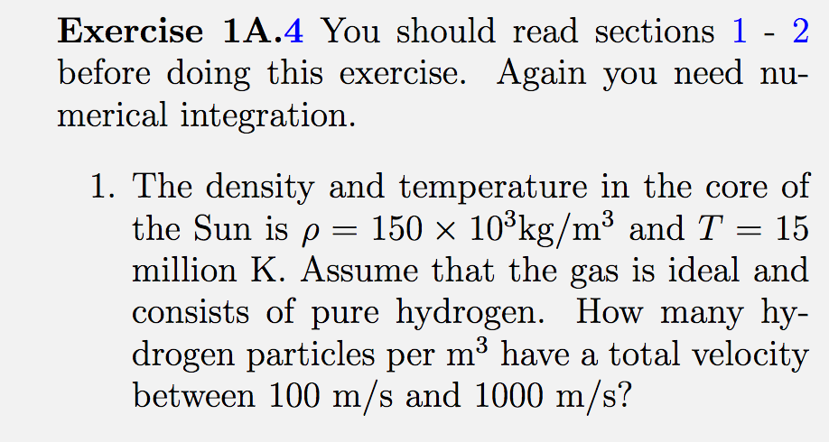

Forrige side🙂 🙁PartikkelhastigheterFORUM
Her er ut utdrag fra en av ukeoppgavene: 
(merk prosjektstudenter, dere har et liknende spørsmål i utfordring A2 i del 1). Tenk gjennom hvordan du vil gå frem for å løse denne oppgaven, diskuter med en medstudent. Du trenger ikke løse oppgaven nå, det aller viktigste er at du har en ide om hvordan den kan løses. Hvis du sliter veldig med å se hva som skal gjøres, ta en titt på denne videoen her.
Hvis det er veldig klart for deg, gå direkte videre til neste side.
Neste side